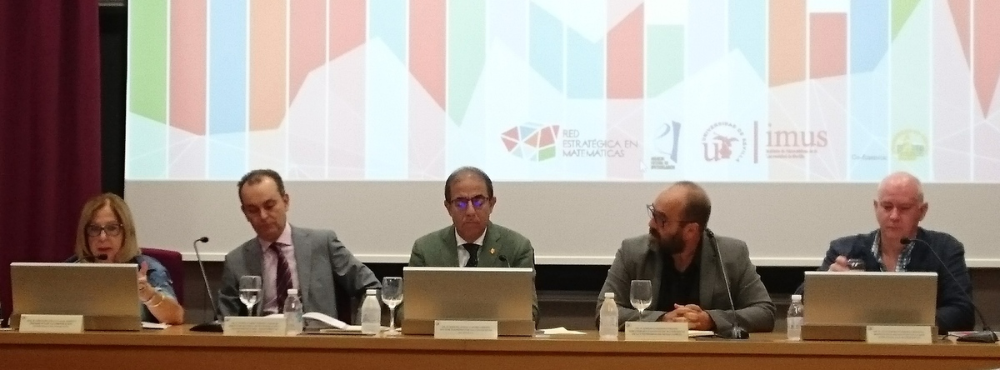
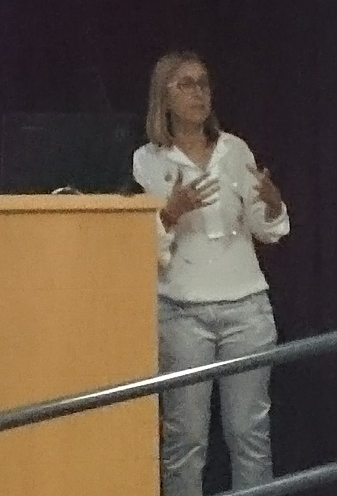

Figura: Momento en el que el profesor Alfredo Bermúdez de Castro recoge el diploma que le
acredita como Medalla de Investigación «Enrique Vidal Abascal» 2019. Foto de G. Feijóo.
Patricia Barral Rodiño
Directora del Departamento de Matemática Aplicada
Universidade de Santiago de Compostela
Alfredo Bermúdez de Castro, catedrático de Matemática Aplicada de la Universidade de Santiago de Compostela, recibió la Medalla de Investigación «Enrique Vidal Abascal» de la Real Academia Gallega de Ciencias (RAGC), durante un acto celebrado el pasado 8 de octubre en el Palacio de Fonseca de la Universidad compostelana para conmemorar el Día de la Ciencia en Galicia. La RAGC otorga cinco medallas de investigación, una por cada una de las cinco secciones que la integran, las cuales llevan el nombre de científicos o científicas de gran relevancia en Galicia. En particular, la Medalla «Enrique Vidal Abascal» se concede en el ámbito de las Matemáticas, Física y CC. de la Computación. El objetivo de estos galardones, cuya primera convocatoria se efectuó este año, es reconocer públicamente trayectorias singulares en la ciencia y tecnología gallegas de científicos y científicas en activo, con actividad consolidada y desarrollada principalmente en Galicia. Alfredo Bermúdez es una figura clave en el desarrollo de la Matemática Aplicada e Industrial en España, que evidenció desde el inicio de su carrera la importancia de la transferencia matemática como herramienta fundamental en el desarrollo económico, tecnológico y social de los países. Formado primero en Santiago y luego en el laboratorio de Jacques-Louis Lions, fundó el Departamento de Matemática Aplicada y el Grupo de Investigación en Ingeniería Matemática (mat+i) de la USC, del cual han surgido otros muchos investigadores que desempeñan hoy su labor en España y en el extranjero. Los múltiples proyectos desarrollados junto con sus colaboradores han facilitado mejoras cualitativas y cuantitativas en la actividad diaria de numerosas empresas con gran peso en la economía española, y en campos muy diversos. A modo de ejemplo, cabe citar las colaboraciones con Dassault Aviation (Francia), Endesa, Alcoa-Inespal, Telefónica, Ferroatlántica I+D, Orona, Bosch GmbH (Alemania), Ferropem (Francia), Teknova (Noruega), CIE-Galfor, GKN Driveline, Altair (USA), la Unidad Mixta de Investigación con Repsol, o la empresa Reganosa, cuyo proyecto GANESO recibió el Premio al Mejor Caso de Éxito de Transferencia de Tecnología en Galicia 2016.
A lo largo de su trayectoria profesional, Alfredo Bermúdez ha simultaneado su actividad investigadora y docente con múltiples tareas de transferencia y gestión. Así, ha destacado su labor como Coordinador del Área de Transferencia de Tecnología en la ANEP o como miembro del Consejo de Dirección del proyecto Consolider i-MATH. Es vicepresidente del Comité Científico del BCAM y fue uno de los promotores del Instituto Tecnológico de Matemática Industrial (ITMATI), un consorcio público creado por las tres universidades gallegas cuyo objetivo fundamental es la transferencia de tecnología matemática a los sectores productivos de la sociedad. Recientemente, fue conferenciante plenario en el ICIAM 2019 celebrado en Valencia, el congreso mundial más prestigioso en Matemática Aplicada e Industrial.
Durante su intervención en la ceremonia de entrega de premios, Alfredo aprovechó para solicitar a los representantes de las Universidades gallegas y de la Xunta de Galicia su apoyo para la creación de una estructura de investigación que agrupe a los investigadores de las tres universidades gallegas y complemente el papel actual del ITMATI, un caso de éxito ampliamente reconocido por su papel en la transferencia.
Tomás Chacón Rebollo
Director del ICIAM 2019–Valencia
Universidad de Sevilla
_______________
Luis Vega, miembro de la SEMA y vicepresidente del ICIAM 2019–Valencia, fue elegido Vocal (Officer) del Consejo (Board) del ICIAM el pasado sábado 20 de julio. La elección tuvo lugar durante la reunión del Board del ICIAM celebrada en Valencia tras finalizar el congreso.
Luis Vega y Wil Schilders, presidente de EU-MATHS-IN, fueron elegidos entre un total de cuatro candidatos, para los dos puestos disponibles.
Los Officers del ICIAM son: presidente, secretario, tesorero, presidente saliente o presidente electo, y dos vocales. Su mandato es de cuatro años renovable una vez.
Como Officer del Board del ICIAM, Luis Vega deberá ocuparse de colaborar en las actividades organizativas y de relaciones exteriores del ICIAM, especialmente de velar por la buena organización del siguiente congreso ICIAM, que tendrá lugar en Tokio en 2023.
Es la primera ocasión en que un español ocupa un puesto de vocal en el ICIAM, es realmente una satisfacción poder transmitir esta magnífica noticia a los miembros de la SEMA.
¡Enhorabuena a todos!
Fernando de Terán Vergara
Universidad de Carlos III de Madrid
_
La Asamblea General Ordinaria de la SEMA 2019 tuvo lugar el martes 18 de julio en el salón de actos del edificio del Rectorado, en el Campus de Blasco Ibáñez de la Universitat de València.
Conviene apuntar que el simple hecho de encontrar un hueco para celebrar la Asamblea de la SEMA, contó en esta ocasión con dificultades excepcionales. La Asamblea tuvo lugar en el seno del congreso ICIAM 2019, con un horario muy denso. Finalmente se decidió hacerlo en la pausa de la comida, lo que obligó a los asistentes a almorzar en los minutos previos al comienzo de la reunión, como puede apreciarse en la foto de la figura 12.
Entre otros, se trataron los siguientes puntos del orden del día:
Informe de la Presidenta. Entre otras cuestiones, la Presidenta de la SEMA, Rosa Donat, recordó que el CEDYA/CMA 2020 tendrá lugar en Gijón, y anunció que hay una propuesta para organizar la próxima Escuela Hispano-Francesa J.L. Lions (en 2021). También dio cuenta de algunas actividades de divulgación, realizadas por miembros de la SEMA dentro de un programa de la Sociedad, dirigidas a estudiantes de enseñanzas medias y que han tenido un resultado muy positivo. Informó también de que los galardonados en los premios ICIAM 2019 se han comprometido a escribir un trabajo para un número especial del SEMA Journal.
Comisión de Educación en la SEMA. La Presidenta anunció que ha encargado a Carlos Gorria, quien ha reemplazado a Sergio Amat en la comisión de Educación del CEMAT por parte de la SEMA, la tarea de crear una comisión de Educación en la propia Sociedad.
Gestión de la página web. La Presidenta informó de que el Consejo Ejecutivo (CE) acordó prorrogar un año el contrato con Grupo Pacífico para hacerse cargo de la secretaría técnica y de la gestión de la página web de la SEMA.
Imagen corporativa de la SEMA. El CE aprobó, en su última reunión, establecer una imagen corporativa uniforme, con un manual de estilo, y actualizar el logo de la SEMA, y se encargó a un subcomité de llevar a cabo la gestión. Dolores Gómez y José Manuel González Vida presentaron la propuesta del logo y el manual de estilo en la Asamblea (a falta de algunos detalles). Se aprobó por asentimiento seguir adelante con la nueva imagen corporativa.
CEDYA/CMA 2020. El profesor Mariano Mateos, como responsable del comité organizador, informó de las últimas novedades del encuentro.
Actualización de estatutos de la SEMA. Según el Secretario de la SEMA, Fernando de Terán, algunas partes de los estatutos de la SEMA están claramente obsoletas y conviene actualizarlas. No obstante, para ello hay que convocar una Asamblea Extraordinaria. Se acordó realizarla inmediatamente antes de la asamblea ordinaria de 2020.
Balance económico. El Tesorero de la SEMA, Antonio Baeza, presentó el balance económico y la propuesta de presupuesto para el próximo ejercicio.
Votaciones. Se llevaron a cabo las votaciones para la renovación de cuatro miembros del CE. Los resultados de las votaciones fueron los siguientes:
Esther Barrabés Vera................ 76 votos Fernando de Terán Vergara .......... 72 votos María Luisa Rapún Banzo..........77 votos Arghir Dani Zharnescu................72 votos
Así pues, los cuatro fueron proclamados automáticamente nuevos miembros del CE de la SEMA. La Presidenta agradeció el trabajo y el esfuerzo a los miembros salientes, Juan Luis García Guirao, Carlos Gorria e Isaac García.
Ruegos y preguntas. Asimismo, se hizo un recuerdo, por parte de Paco Ortegón, a nuestro compañero Francisco Javier Sayas, recientemente fallecido, y un reconocimiento a nuestros compañeros Juan Antonio Carrillo de la Plata y Froilán Martínez Dopico, que han sido elegidos SIAM Fellow Class 2019. Carlos Parés solicitó que también se incluyera el reconocimiento a nuestro compañero Manuel Castro, por haber sido conferenciante plenario en el pasado Congreso Mundial de Matemáticos, celebrado en Río de Janeiro, 1-9 agosto 2018.
Con un agradecimiento a todos los que se han esforzado para que el ICIAM 2019 haya sido posible, y un reconocimiento al excelente trabajo realizado, se dio por concluida la sesión.
La Asamblea dio comienzo a las 13h15’ y se dio por finalizada a las 14h45’.
En la última asamblea de la SEMA, celebrada el 18 de julio de 2019 en el salón de actos del rectorado de la Universitat de València, fue renovado como miembro del consejo ejecutivo de la SEMA el profesor Fernando de Terán Vergara, Universidad Carlos III de Madrid, que seguirá desempeñando el cargo de secretario de dicho consejo. Además, causaron baja del consejo ejecutivo los profesores Carlos Gorria Cores, Issac García García y Juan Luis García Guirao. Al mismo tiempo, fueron elegidos tres nuevos miembros del consejo ejecutivo, a saber, Esther Barrabés Vera, Universitat de Girona, María Luisa Rapún Banzo, Universidad Politécnica de Madrid, y Arghir Dani Zarnescu, Basque Center for Applied Mathematics (BCAM).
Esther Barrabés Vera es licenciada y doctora en Matemáticas por la Universitat Autònoma de Barcelona. Actualmente es profesora Agregada (Contratada Doctora) del departamento de Informàtica, Matemàtica Aplicada i Estadística de la Universitat de Girona, y miembro del grupo EDMA, Ecuaciones diferenciales, modelización y aplicaciones.
Las líneas principales de investigación se centran en la aplicación de los métodos de los sistemas dinámicos a la Mecánica Celeste. En particular, el estudio de la dinámica de problemas de N cuerpos en diferentes escenarios (problemas restringidos, perturbaciones, etc.), estabilidad de órbitas periódicas y soluciones de transferencia de unas regiones a otras usando variedades invariantes y órbitas low-transfer. En la misma línea, y aplicando las mismas herramientas, ha trabajado en problemas de química clásica (como la descripción de los mecanismos dinámicos que llevan a la ionización de electrones) y en problemas de astrodinámica. Recientemente he iniciado trabajos en otros campos de la Mecánica Celeste: las configuraciones centrales, que forman un esqueleto a partir del cual se pueden formar órbitas con un determinado comportamiento, y el estudio de colisiones múltiples y variedades de colisión, que permiten entender el comportamiento de órbitas cercanas a choques.
La profesora Barrabés Vera colabora estrechamente con el grupo de sistemas dinámicos de las universidades de Barcelona y Politécnica de Catalunya, así como con diversos investigadores de diferentes universidades de EE. UU., México y Chile.
María Luisa Rapún Banzo es licenciada (2000) y doctora (2004) en Matemáticas, con la especialidad de Matemática Aplicada, por la Universidad de Zaragoza. Desde 2010 es profesora titular en el Departamento de Matemática Aplicada a la Ingeniería Aeroespacial de la ETSI Aeronáutica y del Espacio, de la Universidad Politécnica de Madrid, donde previamente había sido profesora ayudante doctora y titular interina. Anteriormente fue profesora ayudante en las universidades Pública de Navarra y Complutense de Madrid.
Sus principales líneas de investigación son: solución numérica de problemas inversos relacionados con la detección de objetos e imperfecciones mediante ensayos no invasivos y modelos reducidos para problemas de interés en Aeronáutica.
En 2008 recibió el premio EAIP Young Scientist Award de la Eurasian Association on Inverse Problems, y en 2010 fue galardonada con el Premio SEMA al Joven Investigador 2010.
Desde 2017, desempeña el cargo de secretaria de la Red Española Matemática-Industria, math-in.
Arghir Dani Zharnescu es licenciado en Ciencias Matemáticas por la Universidad «Alexandru Ioan Cuza» de Iasi, Rumanía (1998-2002) y doctor en Ciencias Matemáticas por la University of Chicago (2006). Actualmente es profesor Ikerbasque en el Basque Center for Applied Mathematics (BCAM) en el área de Matemática Aplicada.
Su línea principal de investigación es el estudio analítico de modelos originados por problemas físicos y que están descritos por ecuaciones en derivadas parciales.
Arghir Dani Zharnescu realizó su tesis doctoral en la Universidad de Chicago, EE. UU., bajo la dirección del profesor Peter Constantin. La temática trataba sobre el estudio analítico de modelos de fluidos poliméricos. Tras su doctorado pasó cinco años en la Universidad de Oxford, los primeros dos como investigador posdoctoral bajo la dirección del profesor Sir John M. Ball, y los últimos tres como Titchmarsh Research Fellow. Allí trabajó principalmente en modelos de cristales líquidos, utilizando métodos del cálculo de variaciones, e investigando propiedades cualitativas de los modelos, combinando herramientas analíticas clásicas con aspectos de geometría y topología algebraica. Más tarde pasó cinco años en la Universidad de Sussex, Inglaterra, donde impartió cursos sobre modelos de fluidos no newtonianos y cuestiones de análisis en dominios rugosos. Más recientemente, incorporado ya al BCAM, ha extendido su trabajo a los ferrofluidos y a las interacciones entre fluidos y sólidos en coloides de cristales líquidos. Estos trabajos han dado lugar a 33 publicaciones en revistas científicas internacionales indexadas, a varias contribuciones a congresos, y a la participación en proyectos de investigación de forma ininterrumpida desde 2002.
Actualmente dirige un grupo integrado por dos posdocs y un estudiante de doctorado. Durante su trayectoria investigadora ha contribuido a la formación tanto de posdocs como de doctorandos.
_____________________________________ ◇◇◇_____________________
Carmen Rodrigo Cardiel
Representante de la SEMA en el EYIC
ECCOMAS Young Investigators Committee
Universidad de Zaragoza
_____________
La ECCOMAS Young Investigators Conference (YIC) es una conferencia organizada por jóvenes investigadores con el apoyo de ECCOMAS (European Community on Computational Methods in Applied Sciences) y pretende reunir jóvenes investigadores que trabajan en temas relacionados con el desarrollo y aplicación de métodos computacionales en ciencias e ingeniería. Se celebra cada dos años y hasta ahora ha tenido lugar en Aveiro (Portugal, 2012), Burdeos (Francia, 2013), Aquisgrán (Alemania, 2015), Milán (Italia, 2017) y este año se celebrará en Cracovia (Polonia, 2019).
En respuesta a la convocatoria para la organización de la sexta edición de este evento, YIC 2021, se recibieron cuatro candidaturas diferentes, entre las cuales se encontraba una propuesta conjunta de las dos sociedades españolas, SEMNI y SEMA. Los jóvenes investigadores Enrique Nadal y José Martínez-Casas fueron los responsables de la propuesta por parte de la SEMNI, y Carmen Rodrigo por parte de la SEMA. La candidatura presentó a Valencia como sede de dicha conferencia. Las otras tres candidaturas plantearon la celebración de la conferencia en Kragujevac (Serbia), Zúrich (Suiza) y Jyväskylä (Finlandia). Finalmente, como resultado de la votación, realizada por la Junta Directiva de ECCOMAS en su reunión del día 2 de junio en Barcelona, a la que asistió Rafael Montenegro como representante de la SEMA, se decidió que la sexta edición de la ECCOMAS Young Investigators Conference sea organizada por la Universitat Politècnica de Valencia (UPV).
La celebración de este evento se estima que sea del 7 al 9 de julio de 2021, y nos gustaría invitar a todos los miembros de la SEMA, especialmente a los jóvenes investigadores, a participar en el YIC 2021.
_____________________________________ ◇◇◇_____________________
Henar Herrero Sanz
Departamento de Matemáticas
Universidad de Castilla-La Mancha
__
Los pasados 13 y 14 de septiembre tuvo lugar la reunión anual del Comité de Solidaridad de la European Mathematical Society (EMS) en el Stefan Banach International Mathematical Center de Varsovia. El subdirector del centro, Prof. Adam Skalski dio la bienvenida a los asistentes. A dicha reunión asistió el Presidente de la EMS, Prof. Volker Mehrmann, que explicó la misión del Comité, que consiste en apoyar actividades matemáticas en países europeos menos favorecidos económicamente, buscando igualar los estándares matemáticos en todos los países. En dicha reunión se pusieron las bases para la concesión de becas de viaje, se trató la financiación de eventos, la protección del talento matemático, la consolidación de valores de respeto a la diversidad en la comunidad matemática, las posibles acciones por parte de la EMS en situaciones conflictivas y nuevos conceptos de solidaridad, que pueden venir relacionados con las normativas open access, o la atención por parte de la comunidad a la forma de conseguir que los datos de investigación sigan los principios FAIR (findable, accesible, interoperable and reusable). Se sugirió la realización de un congreso matemático en el área de los Balcanes.
Francisco Ortegón Gallego
Universidad de Cádiz
_______________
El pasado 19 de septiembre se celebró en el Instituto de Matemáticas de la Universidad de Sevilla (IMUS) el acto de presentación del estudio de impacto socioeconómico de las matemáticas en España, bajo el título Las matemáticas, vector estratégico de crecimiento económico.30 El primer acto de este estudio, encargado por la Red Estratégica en Matemáticas (REM) a la consultora Analistas Financieros Internacionales (Afi) ya tuvo lugar en Madrid el 10 de abril de 2019. El acto de presentación en el IMUS, patrocinado por la REM, la Red Española Matemática-Industria (math-in) y el Centro para el Desarrollo Tecnológico e Industrial (CDTI), fue inaugurado por el rector de la Universidad de Sevilla, Miguel Ángel Castro Arroyo, acompañado por la presidenta de la Corporación Tecnológica de Andalucía, Adelaida de la Calle, el director general de Investigación y Transferencia del Conocimiento de la Junta de Andalucía, Pablo Cortés Achedad, el director del IMUS, Emilio Carrizosa Priego, y el responsable del estudio en la REM, Guillermo Curbera Costello.
Al igual que se hizo en el acto de Madrid, la presentación de los resultados del informe fue realizada por Diego Vizcaíno, socio director del Área de Economía Aplicada de Afi. A continuación se presentaron cuatro casos de éxitos de transferencia matemática en Andalucía realizados en distintas universidades, a saber
El acto finalizó con un interesante debate sobre matemática e innovación empresarial en España y Andalucía, coordinado por David Páez, director de Desarrollo de Negocio de la Corporación Tecnológica de Andalucía, y con la participación de Alberto Ariza Lasarte, strategic advisor en Bigml, Emilio Carrizosa Priego, director del IMUS, Beatriz Gaite Castrillo, ingeniera geógrafa del Instituto Nacional de Geografía-Sistema Nacional de alerta ante maremotos, Óscar Noguero Torres, director de proyectos I+D+i de Ghenova, y María Rosa Romero Soler, responsable de Educación de Ayesa.
 (a) Apertura del acto de presentación. De izquierda a derecha, Adelaida de la Calle, Pablo Cortés Achedad, Miguel Ángel Castro Arroyo, Emilio Carrizosa Priego y Guillermo Curbera Costello.
 (b) Casos de éxitos de transferencia matemática en Andalucía. De izquierda a derecha, Manuel Castro Díaz, Justo Puerto Albandoz, Clemente Rubio Manzano y María del Mar Rueda García.
(c) Mesa redonda sobre matemática e innovación empresarial en España y Andalucía. De
izquierda a derecha, María Rosa Romero Soler, Alberto Ariza Lasarte, Beatriz Gaite Castrillo,
Emilio Carrizosa Priego, Óscar Noguero Torres y David Páez.
30Se publicó una nota de prensa en EL PAÍS bajo el título «No hay paro en Matemáticas». El primer informe sobre el impacto de las ciencias exactas en la economía alerta de la distancia en su uso en el tejido productivo español frente a otros países.